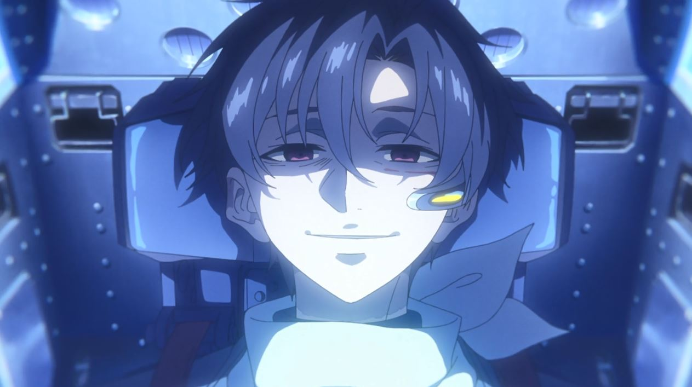
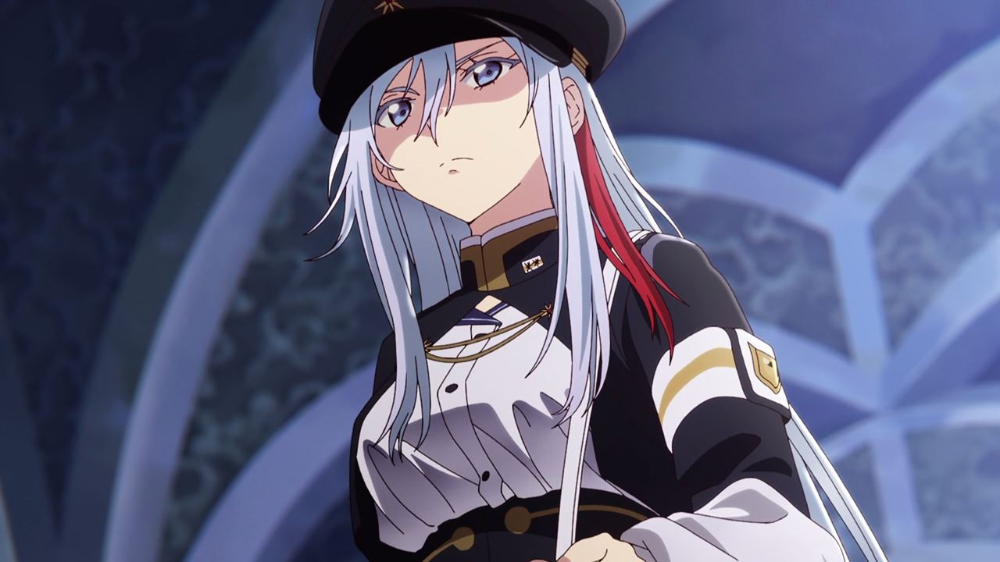
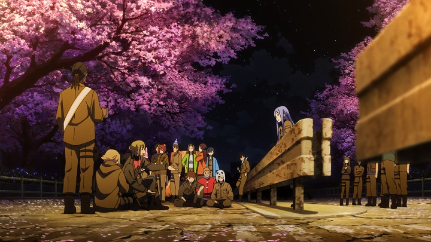
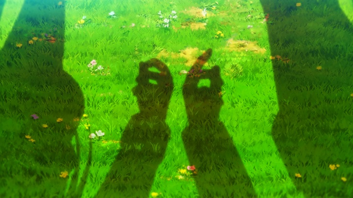

Em resumo, 86 – Eighty Six nos emerge em um cenário de guerra. A República de San Magnolia passa por uma guerra com o Império de Giad já há 9 anos. Sofrendo muitos danos pelos inimigos e suas máquinas (as Legiões), San Magnolia então investe em suas próprias unidades contra essas armas, as tropas autônomas chamadas de Juggernauts. Porém, enquanto esses conflitos ocorrem, na ponta do iceberg da República, todos os seus cidadãos acreditam que todos os Juggernauts são máquinas, porém eles são humanos controlando robôs. É apresentado então um cenário mais denso. A superfície e parte privilegiada da população de San Magnolia é composta apenas por Albas, pessoas com cabelos prateados e olhos claros. A Major Vladilena Milizé, uma nobre alba e oficial militar é designada a controlar a tropa 86, mais uma das tropas forçadas a lutar na guerra pela República de San Magnolia. Porém, um dos destaques é que este esquadrão é composto por alguns veteranos e liderados por um dos mais fortes e temidos soldados, Shinei “The Undertaker” Nouzen (o Coveiro).
O anime 86 inicialmente é um seinen mecha, mas que traz uma carga dramática muito mais densa do que luta entre máquinas. A cada episódio, os espectadores chegam a comentar sobre este sentimento crescente com o passar da série. Tudo isso acontece porque a trama aborda um tema muito polêmico: segregação. É normal assistir 86 e lembrar em alguns lugares de Shingeki no Kyojin ou Deca-Dence por exemplo. O plot principal trabalha esta condição de uma “raça superior” a outra, enquanto a inferior é submetida a uma arma pronta para guerra. Apesar disso tudo, conforme os episódios vão passando, esse tema principal do anime 86 – Eighty Six serve de plano de fundo para abordar as condições em que os personagens da 86 vivem. O anime passa a abordar temas como relacionamento e principalmente sobrevivência e o quão ficamos refém dos nossos sentimentos. Questões como “o que você faria se soubesse que vai morrer amanhã?” e “frente a uma injustiça você age ou fica omisso?” são postas esporadicamente conforme os episódios são desenvolvidos.
Inicialmente os personagens são criados aparentemente para termos nenhuma empatia ou sensibilidade com eles. Muitos se vão sem ao menos nos apegarmos. Porém, os episódios de 86 vão passando e a individualidade de cada um (evidentemente dos que sobram) vai se destacando e tornando tudo mais empático, tanto por sua personalidade, quanto pela condição em que estão. Vemos como uma relação de confiança, mesmo sem a presença física é criada e em resumo, como criamos empatia por personagens a partir de suas condições.
O estúdio A-1 está dentro do guarda-chuva da Aniplex, e como sempre fez um ótimo trabalho. A mescla do 3D para facilitar as movimentações nas cenas de guerra com as Legiões e Juggernauts foi muito bem fluida e executada. Até mesmo os efeitos sonoros são muito bem implementados. A A-1 também foi responsável por animes como Sword Art Online, Ao no Exorcist, Darling in the FranXX e Fairy Tail.
Apesar de o plot segregação dar espaço para o desenvolvimento das relações dos personagens, como já dito ela segue dando o cenário/plano de fundo para que tudo dali pra frente aconteça. O anime 86 – Eighty Six sendo um seinen, cumpre um papel excepcional com o tema abordado, ainda mais por toda a dramaticidade envolvida. Só assistindo para entender o porquê funciona. Dia 27/06 estreia um episódio especial do anime, e a segunda temporada já está prevista ainda para este ano.
